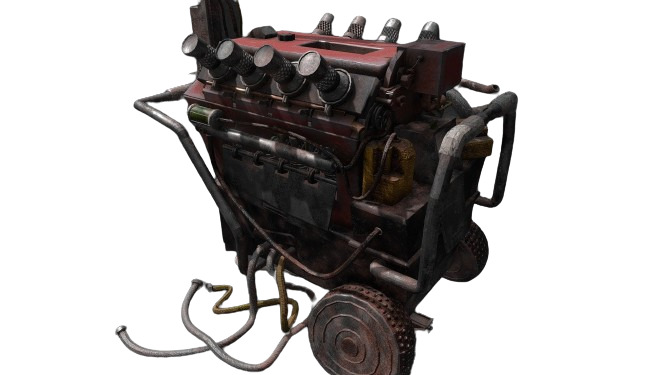
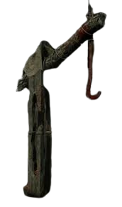
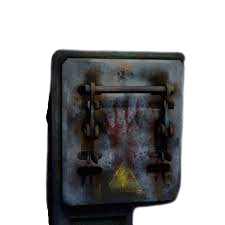
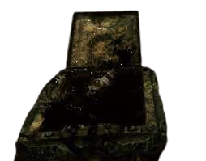

Dead By Daylight
Dead by Daylight é um jogo de terror e de sobrevivência desenvolvido pela Behaviour Interactive. Lançado inicialmente em 16 de junho de 2016, o jogo está disponível para diversas plataformas, incluindo PC, PlayStation, Xbox, Nintendo Switch e Telemoveis.
O jogo segue um formato assimétrico, onde quatro jogadores assumem o papel de sobreviventes enquanto um quinto joga como o assassino. O objetivo dos sobreviventes é escapar do mapa, reparando geradores para abrir portões de saída, enquanto o assassino tenta capturar e sacrificar os sobreviventes para a entidade. Dead by Daylight inclui personagens de vários universos de horror, como filmes clássicos de terror, o que adiciona uma dimensão única ao jogo.
A jogabilidade é intensa e baseada em partidas multiplayer online, criando uma atmosfera tensa e assustadora. Dead by Daylight tornou-se popular devido à sua jogabilidade única e à capacidade de criar experiências imprevisíveis em cada partida.



